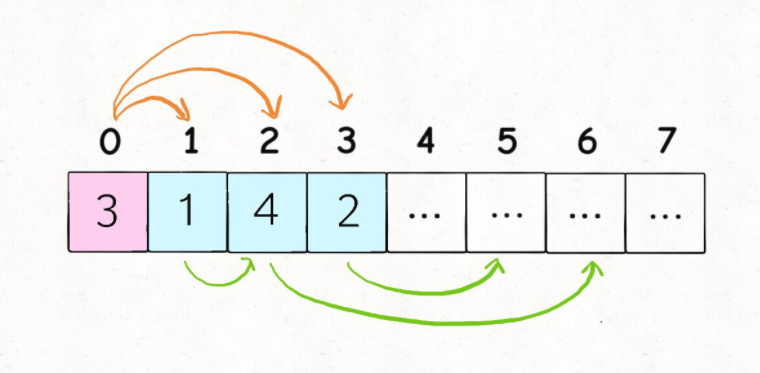
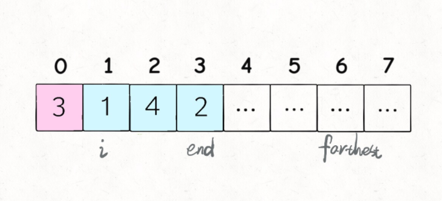

这篇文章是leetcode刷题系列的第6部分——动态规划。这里把有代表性的题目发出来，共计33道。动态规划题目变化多端，目前旨在于习得通用的解题技巧，这些只是比较经典的动态规划题目。
接下来这几个月，计划完成的leetcode刷题系列其组织如下：
1. 数组
2. 链表
3. 字符串
4. 二叉树
5. 队列和栈
6. 动态规划
7. 数据结构设计
预计涉及题目至少200道！
64. Minimum Path Sum
给定一个
m × n的网格，其中填充了非负数，请找到从左上到右下的路径，这将沿其路径的所有数字的总和最小化。注意：您只能在任何时间点向下或向右移动。
Constraints:
m == grid.lengthn == grid[i].length1 <= m, n <= 2000 <= grid[i][j] <= 100Example:
2
3
Output: 7
Explanation: Because the path 1 → 3 → 1 → 1 → 1 minimizes the sum.

1 | // dp[i][j] 表示从起点走到第 i 行, 第 j 列的最小路径和 |
72. Edit Distance
Given two strings
word1andword2, return the minimum number of operations required to convertword1toword2.You have the following three operations permitted on a word:
- Insert a character
- Delete a character
- Replace a character
Example 1:
2
3
4
5
6
Output: 3
Explanation:
horse -> rorse (replace 'h' with 'r')
rorse -> rose (remove 'r')
rose -> ros (remove 'e')Example 2:
2
3
4
5
6
7
8
Output: 5
Explanation:
intention -> inention (remove 't')
inention -> enention (replace 'i' with 'e')
enention -> exention (replace 'n' with 'x')
exention -> exection (replace 'n' with 'c')
exection -> execution (insert 'u')Constraints:
0 <= word1.length, word2.length <= 500word1andword2consist of lowercase English letters.
1 | // 一般来说, 解决字符串的动态规划问题, 是用两个指针 i, j 分别指向两个字符串的尾 |
1 | // 使用 dp table |
300. Longest Increasing Subsequence
给你一个整数数组
nums，找到其中最长严格递增子序列的长度。子序列是由数组派生而来的序列，删除（或不删除）数组中的元素而不改变其余元素的顺序。例如，
[3,6,2,7]是数组[0,3,1,6,2,2,7]的子序列。Example 1:
2
3
Output: 4
Explanation: The longest increasing subsequence is [2,3,7,101], therefore the length is 4.Example 2:
2
Output: 4Example 3:
2
Output: 1Constraints:
1 <= nums.length <= 2500-104 <= nums[i] <= 104Follow up:
- Could you come up with the
O(n2)solution?- Could you improve it to
O(n log(n))time complexity?
1 | // 动态规划 dp[i] 表示以 nums[i] 结尾的最长递增子序列的长度 |
1 | // 既然题目提示我们这题的时间复杂度可以优化到 O(nlogn) |
354. Russian Doll Envelopes
给你一个二维整数数组
envelopes，其中envelopes[i] = [wi, hi]，表示第i个信封的宽度和高度。当另一个信封的宽度和高度都比这个信封大的时候，这个信封就可以放进另一个信封里，如同俄罗斯套娃一样。
请计算最多能有多少个信封能组成一组“俄罗斯套娃”信封（即可以把一个信封放到另一个信封里面）。
注意：不允许旋转信封。
Example 1:
2
3
Output: 3
Explanation: The maximum number of envelopes you can Russian doll is 3 ([2,3] => [5,4] => [6,7]).Example 2:
2
Output: 1
1 | // 按照信封的宽度递增排序, 宽度相等的信封按高度递减排序 |
1 | // 同样的使用二分搜索解法提升效率 |
494. Target Sum
给定一个非负整数数组，
a1, a2, ..., an和一个目标数S。现在你有两个符号+和-。对于数组中的任意一个整数，你都可以从+或-中选择一个符号添加在前面。返回可以使最终数组和为目标数
S的所有添加符号的方法数。Example:
2
3
4
5
6
7
8
9
10
11
Output: 5
Explanation:
-1+1+1+1+1 = 3
+1-1+1+1+1 = 3
+1+1-1+1+1 = 3
+1+1+1-1+1 = 3
+1+1+1+1-1 = 3
There are 5 ways to assign symbols to make the sum of nums be target 3.
1 | // 这道题虽然通常想到的都是 dfs 的方法 |
91. Decode Ways、 639. Decode Ways II
一条包含字母
A - Z的消息通过以下映射进行了编码：
'A' -> 1
'B' -> 2
…
'Z' -> 26
要解码已编码的消息，所有数字必须基于上述映射的方法，反向映射回字母（可能有多种方法）。例如，"11106"可以映射为：
"AAJF"，将消息分组为(1 1 10 6)
"KJF"，将消息分组为(11 10 6)
注意，消息不能分组为(1 11 06)，因为"06"不能映射为"F"，这是由于"6"和"06"在映射中并不等价。给你一个只含数字的非空字符串
s，请计算并返回解码方法的总数 。Example 1:
2
3
Output: 2
Explanation: "12" could be decoded as "AB" (1 2) or "L" (12).Example 2:
2
3
Output: 3
Explanation: "226" could be decoded as "BZ" (2 26), "VF" (22 6), or "BBF" (2 2 6).Example 3:
2
3
4
5
Output: 0
Explanation: There is no character that is mapped to a number starting with 0.
The only valid mappings with 0 are 'J' -> "10" and 'T' -> "20", neither of which start with 0.
Hence, there are no valid ways to decode this since all digits need to be mapped.Example 4:
2
3
Output: 0
Explanation: "06" cannot be mapped to "F" because of the leading zero ("6" is different from "06").Constraints:
1 <= s.length <= 100scontains only digits and may contain leading zero(s).
1 | int numDecodings(string s) |
516. Longest Palindromic Subsequence
给定一个字符串
s，找到其中最长的回文子序列，并返回该序列的长度。可以假设s的最大长度为1000。Example 1:
2
3
Output: 4
Explanation: One possible longest palindromic subsequence is "bbbb".Example 2:
2
3
Output: 2
Explanation: One possible longest palindromic subsequence is "bb".
1 | // dp[i][j] 表示子串 s[i..j] 中的最长回文子序列 |
1143. Longest Common Subsequence
给定两个字符串
text1和text2，返回这两个字符串的最长公共子序列的长度。如果不存在公共子序列，返回0。一个字符串的子序列是指这样一个新的字符串：它是由原字符串在不改变字符的相对顺序的情况下删除某些字符（也可以不删除任何字符）后组成的新字符串。
例如，
"ace"是"abcde"的子序列，但"aec"不是"abcde"的子序列。两个字符串的公共子序列是这两个字符串所共同拥有的子序列。Example 1:
2
3
Output: 3
Explanation: The longest common subsequence is "ace" and its length is 3.Example 2:
2
3
Output: 3
Explanation: The longest common subsequence is "abc" and its length is 3.Example 3:
2
3
Output: 0
Explanation: There is no such common subsequence, so the result is 0.
1 | // dp[i][j] 表示 text1[0..i-1] 和 text2[0..j-1] 的最长公共子序列长度 |
583. Delete Operation for Two Strings
Given two strings
word1andword2, return the minimum number of steps required to makeword1andword2the same.In one step, you can delete exactly one character in either string.
Example 1:
2
3
Output: 2
Explanation: You need one step to make "sea" to "ea" and another step to make "eat" to "ea".Example 2:
2
Output: 4
1 | // 可以看出来, 一番删除操作之后剩下的字符串就是它们的最长公共子序列 |
712. Minimum ASCII Delete Sum for Two Strings
给定两个字符串
s1, s2，找到使两个字符串相等所需删除字符的ASCII值的最小和。Example 1:
2
3
4
5
Output: 231
Explanation: Deleting "s" from "sea" adds the ASCII value of "s" (115) to the sum.
Deleting "t" from "eat" adds 116 to the sum.
At the end, both strings are equal, and 115 + 116 = 231 is the minimum sum possible to achieve this.Example 2:
2
3
4
5
6
Output: 403
Explanation: Deleting "dee" from "delete" to turn the string into "let",
adds 100[d]+101[e]+101[e] to the sum. Deleting "e" from "leet" adds 101[e] to the sum.
At the end, both strings are equal to "let", and the answer is 100+101+101+101 = 403.
If instead we turned both strings into "lee" or "eet", we would get answers of 433 or 417, which are higher.Note:
0 < s1.length, s2.length <= 1000.All elements of each string will have an ASCII value in
[97, 122].
1 | // 和 LCS 的思路有些许相似之处 |
368. Largest Divisible Subset
给你一个由无重复正整数组成的集合
nums，请你找出并返回其中最大的整除子集answer，子集中每一元素对(answer[i], answer[j])都应当满足：
answer[i] % answer[j] == 0，或answer[j] % answer[i] == 0如果存在多个有效解子集，返回其中任何一个均可。
Example 1:
2
3
Output: [1,2]
Explanation: [1,3] is also accepted.Example 2:
2
Output: [1,2,4,8]
1 | // 这题要先把数组按照升序排列, 排完序之后就是求最长倍增子序列 |
121. Best Time to Buy and Sell Stock
给定一个数组
prices，它的第i个元素prices[i]表示一支给定股票第i天的价格。你只能选择某一天买入这只股票，并选择在未来的某一个不同的日子卖出该股票。设计一个算法来计算你所能获取的最大利润。
返回你可以从这笔交易中获取的最大利润。如果你不能获取任何利润，返回
0。Example 1:
2
3
4
Output: 5
Explanation: Buy on day 2 (price = 1) and sell on day 5 (price = 6), profit = 6-1 = 5.
Note that buying on day 2 and selling on day 1 is not allowed because you must buy before you sell.Example 2:
2
3
Output: 0
Explanation: In this case, no transactions are done and the max profit = 0.
1 | // 直接贪心算法 |
1 | // 动态规划解法 |
122. Best Time to Buy and Sell Stock II
给定一个数组
prices，其中prices[i]是一支给定股票第i天的价格。设计一个算法来计算你所能获取的最大利润。你可以尽可能地完成更多的交易（多次买卖一支股票）。
注意：你不能同时参与多笔交易（你必须在再次购买前出售掉之前的股票）。
Example 1:
2
3
4
Output: 7
Explanation: Buy on day 2 (price = 1) and sell on day 3 (price = 5), profit = 5-1 = 4.
Then buy on day 4 (price = 3) and sell on day 5 (price = 6), profit = 6-3 = 3.Example 2:
2
3
4
Output: 4
Explanation: Buy on day 1 (price = 1) and sell on day 5 (price = 5), profit = 5-1 = 4.
Note that you cannot buy on day 1, buy on day 2 and sell them later, as you are engaging multiple transactions at the same time. You must sell before buying again.Example 3:
2
3
Output: 0
Explanation: In this case, no transaction is done, i.e., max profit = 0.
1 | // 这题交易次数不限 |
123. Best Time to Buy and Sell Stock III
给定一个数组，它的第
i个元素是一支给定的股票在第i天的价格。设计一个算法来计算你所能获取的最大利润。你最多可以完成两笔交易。
注意：你不能同时参与多笔交易（你必须在再次购买前出售掉之前的股票）。
Example 1:
2
3
4
Output: 6
Explanation: Buy on day 4 (price = 0) and sell on day 6 (price = 3), profit = 3-0 = 3.
Then buy on day 7 (price = 1) and sell on day 8 (price = 4), profit = 4-1 = 3.Example 2:
2
3
4
Output: 4
Explanation: Buy on day 1 (price = 1) and sell on day 5 (price = 5), profit = 5-1 = 4.
Note that you cannot buy on day 1, buy on day 2 and sell them later, as you are engaging multiple transactions at the same time. You must sell before buying again.Example 3:
2
3
Output: 0
Explanation: In this case, no transaction is done, i.e. max profit = 0.Example 4:
2
Output: 0
1 | // 这题就是下一题 k = 2 的情形 |
188. Best Time to Buy and Sell Stock IV
给定一个整数数组
prices，它的第i个元素prices[i]是一支给定的股票在第i天的价格。设计一个算法来计算你所能获取的最大利润。你最多可以完成
k笔交易。注意：你不能同时参与多笔交易（你必须在再次购买前出售掉之前的股票）。
Example 1:
2
3
Output: 2
Explanation: Buy on day 1 (price = 2) and sell on day 2 (price = 4), profit = 4-2 = 2.Example 2:
2
3
Output: 7
Explanation: Buy on day 2 (price = 2) and sell on day 3 (price = 6), profit = 6-2 = 4. Then buy on day 5 (price = 0) and sell on day 6 (price = 3), profit = 3-0 = 3.
1 | // 这题我们最多可以完成 k 笔交易 |
309. Best Time to Buy and Sell Stock with Cooldown
给定一个整数数组，其中第
i个元素代表了第i天的股票价格 。设计一个算法计算出最大利润。在满足以下约束条件下，你可以尽可能地完成更多的交易（多次买卖一支股票）:
你不能同时参与多笔交易（你必须在再次购买前出售掉之前的股票）。卖出股票后，你无法在第二天买入股票 (即冷冻期为
1天)。Example 1:
2
3
Output: 3
Explanation: transactions = [buy, sell, cooldown, buy, sell]Example 2:
2
Output: 0
1 | // 这题交易次数不限, 但是有冷冻期, 因此买进的时候需要看大前天的状态 |
714. Best Time to Buy and Sell Stock with Transaction Fee
给定一个数组
prices，其中prices[i]是一支给定股票第i天的价格。非负整数fee表示交易一次股票需要支付的费用。设计一个算法来计算你所能获取的最大利润。你可以尽可能地完成更多的交易（多次买卖一支股票）。
注意：你不能同时参与多笔交易（你必须在再次购买前出售掉之前的股票）。
1 | // 这题交易次数不限 |
377. Combination Sum IV
给你一个由不同整数组成的数组
nums，和一个目标整数target。请你从nums中找出并返回总和为target的元素组合的个数。题目数据保证答案符合
32位整数范围。示例 1：
2
3
4
5
6
7
8
9
10
11
12
输出：7
解释：
所有可能的组合为：
(1, 1, 1, 1)
(1, 1, 2)
(1, 2, 1)
(1, 3)
(2, 1, 1)
(2, 2)
(3, 1)
请注意，顺序不同的序列被视作不同的组合。（这特么就是排列呀！！！）示例 2：
2
输出：0
1 | vector<int> memo; |
1 | // 这题其实并不是组合问题, 而是排列问题 |
322. Coin Change
给定不同面额的硬币
coins和一个总金额amount。编写一个函数来计算可以凑成总金额所需的最少的硬币个数。如果没有任何一种硬币组合能组成总金额，返回-1。你可以认为每种硬币的数量是无限的。
Constraints:
1 <= coins.length <= 121 <= coins[i] <= 231 - 10 <= amount <= 10^4Example 1:
2
3
Output: 3
Explanation: 11 = 5 + 5 + 1Example 2:
2
Output: -1
1 | // 状态只有 金额数 |
1 | // 也可以看成是一个完全背包问题 |
518. Coin Change 2
给定不同面额的硬币和一个总金额。写出函数来计算可以凑成总金额的硬币组合数。假设每一种面额的硬币有无限个。
Constraints:
1 <= coins.size() <= 3001 <= coins[i] <= 50000 <= amount <= 5000Example 1:
2
3
4
5
6
7
Output: 4
Explanation: there are four ways to make up the amount:
5 = 5
5 = 2 + 2 + 1
5 = 2 + 1 + 1 + 1
5 = 1 + 1 + 1 + 1 + 1Example 2:
2
3
Output: 0
Explanation: the amount of 3 cannot be made up just with coins of 2.
1 | // 完全背包问题 |
474. Ones and Zeroes
给你一个二进制字符串数组
strs和两个整数m和n。请你找出并返回
strs的最大子集的大小，该子集中最多有m个0和n个1。如果
x的所有元素也是y的元素，集合x是集合y的子集 。Example 1:
2
3
4
5
Output: 4
Explanation: The largest subset with at most 5 0's and 3 1's is {"10", "0001", "1", "0"}, so the answer is 4.
Other valid but smaller subsets include {"0001", "1"} and {"10", "1", "0"}.
{"111001"} is an invalid subset because it contains 4 1's, greater than the maximum of 3.Example 2:
2
3
Output: 2
Explanation: The largest subset is {"0", "1"}, so the answer is 2.Constraints:
1 <= strs.length <= 6001 <= strs[i].length <= 100strs[i]consists only of digits'0'and'1'.1 <= m, n <= 100
1 | // 01背包问题 |
139. Word Break
给定一个非空字符串
s和一个包含非空单词的列表wordDict，判定s是否可以被空格拆分为一个或多个在字典中出现的单词。说明：
- 拆分时可以重复使用字典中的单词。
- 你可以假设字典中没有重复的单词。
Example 1:
2
3
Output: true
Explanation: Return true because "leetcode" can be segmented as "leet code".Example 2:
2
3
4
Output: true
Explanation: Return true because "applepenapple" can be segmented as "apple pen apple".
Note that you are allowed to reuse a dictionary word.Example 3:
2
Output: false
1 | // 和背包问题有点类似, 但有不同之处 |
1 | // 记忆化递归 |
140. Word Break II
给定一个非空字符串
s和一个包含非空单词列表的字典wordDict，在字符串中增加空格来构建一个句子，使得句子中所有的单词都在词典中。返回所有这些可能的句子。说明：
- 分隔时可以重复使用字典中的单词。
- 你可以假设字典中没有重复的单词。
1 <= s.size() <= 20Example 1:
2
Output: ["cats and dog","cat sand dog"]Example 2:
2
3
Output: ["pine apple pen apple","pineapple pen apple","pine applepen apple"]
Explanation: Note that you are allowed to reuse a dictionary word.Example 3:
2
Output: []
1 | // 回溯 |
416. Partition Equal Subset Sum
Given a non-empty array
numcontaining only positive integers, find if the array can be partitioned into two subsets such that the sum of elements in both subsets is equal.Example 1:
2
3
Output: true
Explanation: The array can be partitioned as [1, 5, 5] and [11].Example 2:
2
3
Output: false
Explanation: The array cannot be partitioned into equal sum subsets.Constraints:
1 <= nums.length <= 2001 <= nums[i] <= 100
1 | // 转化为背包问题进行求解 |
698. Partition to K Equal Sum Subsets
给定一个整数数组
nums和一个正整数k，找出是否有可能把这个数组分成k个非空子集，其总和都相等。Example 1:
2
3
Output: true
Explanation: It's possible to divide it into 4 subsets (5), (1, 4), (2,3), (2,3) with equal sums.Example 2:
2
Output: falseConstraints:
1 <= k <= nums.length <= 160 <= nums[i] <= 104
1 | // 其实上题 416(k = 2) 以及 473(k = 4) 都是这题的特例 |
55. Jump Game
给定一个非负整数数组
nums，你最初位于数组的第一个下标。数组中的每个元素代表你在该位置可以跳跃的最大长度。判断你是否能够到达最后一个下标。Example 1:
2
3
Output: true
Explanation: Jump 1 step from index 0 to 1, then 3 steps to the last index.Example 2:
2
3
Output: false
Explanation: You will always arrive at index 3 no matter what. Its maximum jump length is 0, which makes it impossible to reach the last index.Constraints:
1 <= nums.length <= 3 * 1040 <= nums[i] <= 105
1 | // 也就是问你最多能跳多远 |
45. Jump Game II
给定一个非负整数数组，你最初位于数组的第一个位置。数组中的每个元素代表你在该位置可以跳跃的最大长度。你的目标是使用最少的跳跃次数到达数组的最后一个位置。假设你总是可以到达数组的最后一个位置。
Example 1:
2
3
Output: 2
Explanation: The minimum number of jumps to reach the last index is 2. Jump 1 step from index 0 to 1, then 3 steps to the last index.Example 2:
2
Output: 2
1 | // 动态规划 |
| 索引 2 的覆盖范围最远 | 就以其最远索引作为下次起跳的位置 |
|---|---|
|  |  |
1 | // 贪心, 优先跳到下次能跳最远的索引 |
1306. Jump Game III
这里有一个非负整数数组
arr，你最开始位于该数组的起始下标start处。当你位于下标i处时，你可以跳到i + arr[i]或者i - arr[i]。请你判断自己是否能够跳到对应元素值为0的任一下标处。注意，不管是什么情况下，你都无法跳到数组之外。Example 1:
2
3
4
5
6
Output: true
Explanation:
All possible ways to reach at index 3 with value 0 are:
index 5 -> index 4 -> index 1 -> index 3
index 5 -> index 6 -> index 4 -> index 1 -> index 3Example 2:
2
3
4
5
Output: true
Explanation:
One possible way to reach at index 3 with value 0 is:
index 0 -> index 4 -> index 1 -> index 3Example 3:
2
3
Output: false
Explanation: There is no way to reach at index 1 with value 0.Constraints:
0 <= start < arr.length
1 | // bfs |
1 | // dfs |
1345. Jump Game IV
给你一个整数数组
arr，你一开始在数组的第一个元素处（下标为0）。每一步，你可以从下标i跳到下标：
i + 1满足：i + 1 < arr.length
i - 1满足：i - 1 >= 0
j满足：arr[i] == arr[j]且i != j请你返回到达数组最后一个元素的下标处所需的最少操作次数。
注意：任何时候你都不能跳到数组外面。
Example 1:
2
3
Output: 3
Explanation: You need three jumps from index 0 --> 4 --> 3 --> 9. Note that index 9 is the last index of the array.Example 2:
2
3
Output: 0
Explanation: Start index is the last index. You don't need to jump.Example 3:
2
3
Output: 1
Explanation: You can jump directly from index 0 to index 7 which is last index of the array.Example 4:
2
Output: 2Example 5:
2
Output: 3
1 | // 搜索最短路径显然用 bfs |
403. Frog Jump
一只青蛙想要过河。 假定河流被等分为若干个单元格，并且在每一个单元格内都有可能放有一块石子（也有可能没有）。 青蛙可以跳上石子，但是不可以跳入水中。
给你石子的位置列表
stones（用单元格序号升序表示）， 请判定青蛙能否成功过河（即能否在最后一步跳至最后一块石子上）。开始时， 青蛙默认已站在第一块石子上，并可以假定它第一步只能跳跃一个单位（即只能从单元格
1跳至单元格2）。如果青蛙上一步跳跃了
k个单位，那么它接下来的跳跃距离只能选择为k - 1、k或k + 1个单位。 另请注意，青蛙只能向前方（终点的方向）跳跃。Example 1:
2
3
Output: true
Explanation: The frog can jump to the last stone by jumping 1 unit to the 2nd stone, then 2 units to the 3rd stone, then 2 units to the 4th stone, then 3 units to the 6th stone, 4 units to the 7th stone, and 5 units to the 8th stone.Example 2:
2
3
Output: false
Explanation: There is no way to jump to the last stone as the gap between the 5th and 6th stone is too large.Constraints:
2 <= stones.length <= 20000 <= stones[i] <= 231 - 1stones[0] == 0
1 | // 记忆化搜索 |
1 | // 动态规划 |
10. Regular Expression Matching
给你一个字符串
s和一个模式串p，请你来实现一个支持'.'和'*'的正则表达式匹配。
'.'匹配任意单个字符
'*'匹配零个或多个前面的那一个元素所谓匹配，是要涵盖整个字符串
s的，而不是部分字符串。Example 1:
2
3
Output: false
Explanation: "a" does not match the entire string "aa".Example 2:
2
3
Output: true
Explanation: '*' means zero or more of the preceding element, 'a'. Therefore, by repeating 'a' once, it becomes "aa".Example 3:
2
3
Output: true
Explanation: ".*" means "zero or more (*) of any character (.)".Example 4:
2
3
Output: true
Explanation: c can be repeated 0 times, a can be repeated 1 time. Therefore, it matches "aab".Example 5:
2
Output: falseConstraints:
0 <= s.length <= 200 <= p.length <= 30scontains only lowercase English letters.pcontains only lowercase English letters,'.', and'*'.- It is guaranteed for each appearance of the character
'*', there will be a previous valid character to match.
1 | // 动态规划 |
312. Burst Balloons
有
n个气球，编号为0到n - 1，每个气球上都标有一个数字，这些数字存在数组nums中。现在要求你戳破所有的气球。戳破第
i个气球，你可以获得nums[i - 1] * nums[i] * nums[i + 1]枚硬币。这里的i - 1和i + 1代表和i相邻的两个气球的序号。如果i - 1或i + 1超出了数组的边界，那么就当它是一个数字为1的气球。求所能获得硬币的最大数量。
Example 1:
2
3
4
5
Output: 167
Explanation:
nums = [3,1,5,8] --> [3,5,8] --> [3,8] --> [8] --> []
coins = 3*1*5 + 3*5*8 + 1*3*8 + 1*8*1 = 167Example 2:
2
Output: 10Constraints:
n == nums.length1 <= n <= 5000 <= nums[i] <= 100
1 | // 动态规划 |
887. Super Egg Drop
给你
k枚相同的鸡蛋，并可以使用一栋从第1层到第n层共有n层楼的建筑。已知存在楼层
f，满足0 <= f <= n，任何从高于f的楼层落下的鸡蛋都会碎，从f楼层或比它低的楼层落下的鸡蛋都不会破。每次操作，你可以取一枚没有碎的鸡蛋并把它从任一楼层
x扔下（满足1 <= x <= n）。如果鸡蛋碎了，你就不能再次使用它。如果某枚鸡蛋扔下后没有摔碎，则可以在之后的操作中重复使用这枚鸡蛋。请你计算并返回要确定
f确切的值的最坏情况下的最小尝试次数？Example 1:
2
3
4
5
6
7
Output: 2
Explanation:
Drop the egg from floor 1. If it breaks, we know that f = 0.
Otherwise, drop the egg from floor 2. If it breaks, we know that f = 1.
If it does not break, then we know f = 2.
Hence, we need at minimum 2 moves to determine with certainty what the value of f is.Example 2:
2
Output: 3Example 3:
2
Output: 4Constraints:
1 <= k <= 1001 <= n <= 104
1 | // 记忆化递归 |

1 | // 记忆化递归 + 二分搜索优化 |